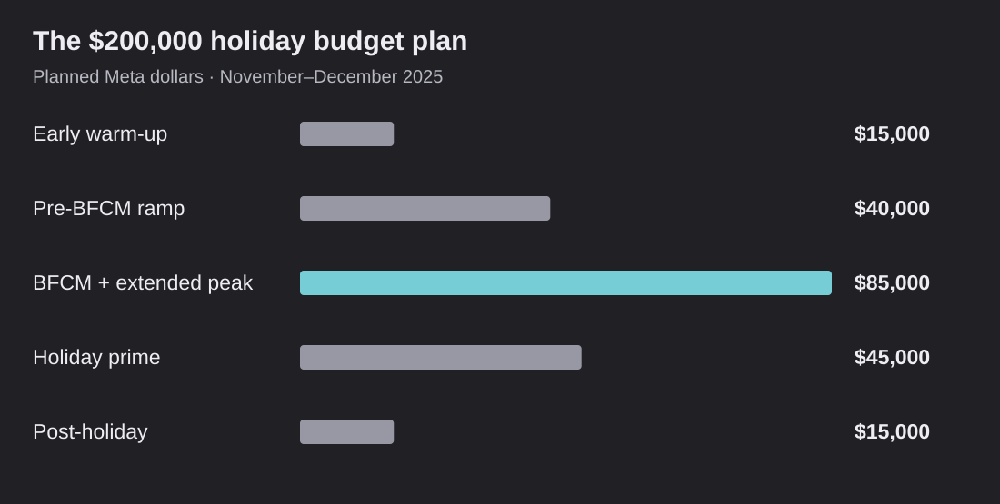

Compartés: original planning excerpts
These excerpts come from two original operating tasks for the 2025 holiday season. The private source records identify me as their creator and assignee. Public copies remove people's names, internal links, contact details and unrelated notes. Formatting and line breaks are normalized. The excerpts below are source material, not a newly invented campaign plan.

Return to the main case · Read the campaign submission
Campaign update task
Created November 5, 2025. Last updated November 21, 2025. Recorded as completed. The last update precedes Black Friday. Creation and assignment fields were checked in the private original; they are omitted here to protect identity.
Increase budgets 10-20% WoW
Get more compilation videos going
Slot in some photography
Holiday compilation UGC
The same task calls for stronger promotion of the advent calendar and a daily check of budget, spend, revenue, marketing efficiency and platform return. Those lines contain names and links in the private original, so this sentence summarizes their substance rather than presenting them as verbatim quotes.
This is evidence of my planning and direction. It does not establish that I personally filmed, designed or edited the creative, or executed every requested account change.
Holiday budget plan
Created November 7, 2025. Last updated December 15, 2025. Recorded as completed. The final notes were therefore maintained during the season. They should not all be treated as an unchanged November 7 snapshot.
Scroll sideways to see all table columns.
| Phase in the task | Dates | Planned Meta budget |
|---|---|---|
| Early warm-up | November 1–7 | $15,000 |
| Pre-BFCM ramp | November 8–21 | $40,000 |
| BFCM surge and extended peak | November 22–December 8 | $85,000 |
| Holiday prime | December 9–20 | $45,000 |
| Post-holiday and self-gifting | December 21–31 | $15,000 |
| Total | November–December | $200,000 |
The task uses the previous year's daily pattern to explain where demand was weak or strong and where to concentrate spend. It describes scaling Meta when both the overall efficiency check and a platform return above 4x support it. The separate campaign update task calls for 10–20% weekly increases.
The original rough percentage annotations do not all match the dollar amounts. This public table reproduces the planned dollars and dates, which add to $200,000. They are planning figures, not a phase-by-phase record of actual spend. Exact internal source identifiers and account links are withheld.
What these records establish
They connect my contribution to concrete work before and during the season: budgeting, timing, creative requests and the team's daily performance checks. They support the campaign story alongside the submission and actual creative. Team sales outcomes remain team outcomes; source authorship does not turn them into a solo achievement.